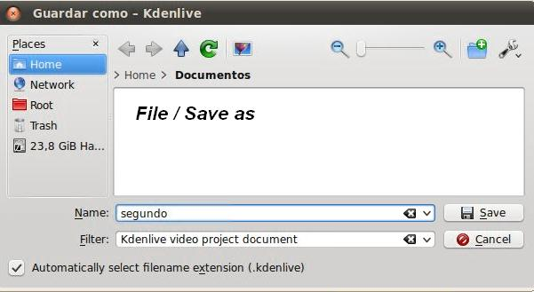

A. Aplicar Efectos a nuestro Proyecto
| 1. Abrimos nuestro proyecto generado en el apartado 1.1. File / Open Recent y el nombre que le hubiéramos dado. |
|
2. Aplicaremos un efecto a una parte de nuestro clip de video. En nuestro caso en la pista 3. Observa, en la zona de la pista 3, que el sonido de este clip ha sido desactivado. Ello se debe a que deseamos que el sonido que lleve el producto final sea el que disponemos en la pista 2 (ficherod e audio). 3. Seleccionamos el (1) video de la pista 3, localizamos el frame (o posición) (2) y podemos mover dicho cursor de posicionamiento hasta localizar (lo vemos en (3) monitor) donde deseamos comenzar el efecto.
|
| 4. Una vez localizado el punto (a), botón derecho / cortar clip (b). Esto divide nuestro clip en dos partes independientes. |
|
|
| 5. Selecciona otro punto, en la línea de tiempo del clip de la pista 3, y procede a dividir. En este caso nuestro clip original está compuesto, en este momento, por 3 clips independientes. En la imagen inferior los he separado para que se pueda observar. |
|
6. Aplicaremos un efecto a cada una de las partes. Seleccionamos la parte 1, y ubica el cursor de posicionamiento (A)
encima de esa parte del clip para que puedas apreciar en el monitor el resultado de aplicar un efecto. Selecciona el clip (B), en la lista de Efectos (C) selecciona en el apartado fun / carboncillo. Haz doble clic y observarás en la pestaña pila de efectos la inclusión de este efecto. Modifica los valores (D) y comprueba en el monitor (F) los resultados. Cuando encuentres la combinación que te guste, verifica con el play del monitor (E) el resultado de nuestra composición. |
| 7. Repetimos el proceso. Selecciona la segunda parte (A) del clip dividido de la pista 3 (B). Selecciona en la lista de efectos (C) y localiza en Miscelánea / 3dflippo. Haz doble clic y en la pila de efectos (de este clip) aparece el nuevo Efecto. Mirando el monitor modifica los valores (E). Utiliza el play para comprobar el efecto en su totalidad. |
| |
| 8. Aplicaremos un efecto a la tercera parte del clip original. Repite los pasos (a), (b), (c) y localiza el Color / efecto sepia. Modifica los valores (d), mientras observas el resultado en el monitor (e). Al finalizar utiliza el play (F) para ver el efecto en la parte del clip que hemos tratado. |
|
8. Guardemos nuestro proyecto con otro nombre (proyecto2_2). Vamos a File / Save as.
Esto es recomendable realizarlo antes de proceder a generar nuestro video final. |
|

|
|
9. Generamos nuestro video final. Vamos a Proyecto / Generar video o en la barra de herramientas el botón de generar video. Modifica (1) el nombre del fichero final. Elige el sistema (2), en nuestro caso PAL, el tipo de formato (3) y el códec respectivo (4). Haz clic (5) en generar fichero.
|
|
|
| 10. El proceso de generación puede tardar varios minutos. Depende del tamaño del fichero, tipo de formato, efectos, entre otros. |
| 11. Ve a la carpeta de destino (en mi ejemplo: /home/lliurex/proyecto_ejemplo) y reproduce el video generado con cualquier reproductor multimedia que tengas en tu sistema. |
Este video muestra alguno de los efectos más interesantes que podemos aplicar al utilizar el Editor Kdenlive.
Jo.R.C.A. 2004 - 2011

Edición de Audio y Video con Software Libre by José Ramón Cerdeira Alonso is licensed under a Creative Commons Reconocimiento-No comercial-Compartir bajo la misma licencia 3.0 España License